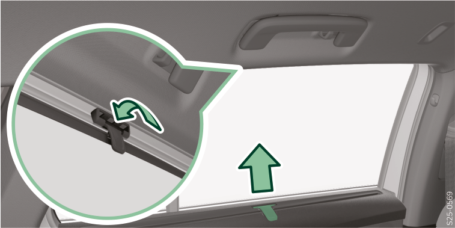

<!-- topicId: 7fa443d30f6f84a40c368839b607bac0_3_fr_FR | type: topic -->
<h1>Vue d’ensemble</h1>
<html data-dyxml-version="2"><div lang="fr-FR"><div class="topic-content"><section data-type="topic-allgemein" data-dl-contains="block" id="ID_39e1156423d7d20fac1445250353bced-60d6ea66ca9b005eac1445250f1f41e1-fr-FR"><p id="ID_5ec886c823d7d20fac144525227d45fa-60d6ea66ca9b005eac1445250f1f41e1-fr-FR"></p><div data-role="block" data-type="block" id="ID_989edff6e12aace3ac1445254f107f7a-60d6ea66ca9b005eac1445250f1f41e1-fr-FR" hasIllu="true"><div data-type="illu" id="ID_e01e7977360311ef9f6fefa87e99f0e6-60d6ea66ca9b005eac1445250f1f41e1-fr-FR"><div data-class="vw-layout-narrow" data-dl-wrapper="figure" id="d2172095e34"><figure id="ID_66b8369cabf45b4dac1445253d0b19c7-60d6ea66ca9b005eac1445250f1f41e1-fr-FR" data-role="" data-type="" data-position=""><div><a data-fancybox="group" media-link="" class="fancybox" data-href="../media/imga500a88aa0be07b6ac1445256b95e77c_1_--_--_PNG_3x.png" data-options="{&#34;buttons&#34;:[&#34;fullScreen&#34;, &#34;thumbs&#34;, &#34;close&#34;],&#34;hash&#34;:false}"></img></a></div></figure></div></div><p data-type="p" id="ID_935dc72defb8cdbaac1445256c6eac24-60d6ea66ca9b005eac1445250f1f41e1-fr-FR">Autres informations  <a data-topic-id="a1a8b16e1e07035b9ffb04bff7126923_3_fr_FR" href="#topic/a1a8b16e1e07035b9ffb04bff7126923_3_fr_FR" data-role="dynamic" data-linktext="undefined" data-type="link" data-class="vw-link-short vw-link-arrow" id="ID_c809f389efaa09f90ad8ced34ad32a10-60d6ea66ca9b005eac1445250f1f41e1-fr-FR" checked-link="7fa443d30f6f84a40c368839b607bac0_3_fr_FR" class="local-topic-link dynamic-link topiclink" data-facets="nid97928302c6a0a9e20cebc7903058c1c5_|_nid5514815b6a898bfd54097933a3ae9dcf AND nid6a10d532beb6bb1815d61c592a514037_|_nid41b61c1e7c6d232fc07ea8943d24e550"><span>Pare-soleil pour les vitres arrière</span></a>.</p></div><div></div></section></div></div></html>